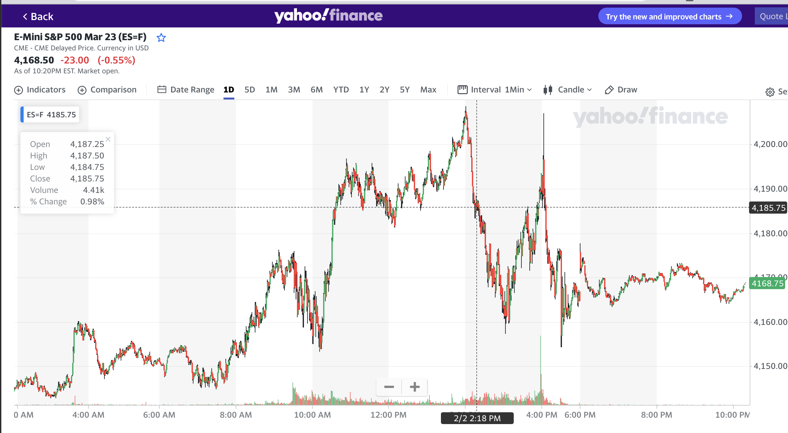
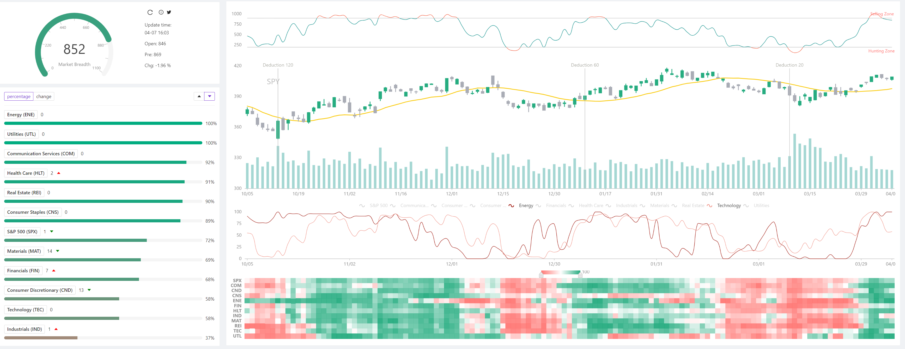

Data Source
In order to develop a sufficient and efficient market breadth measurement model, I’m going to collect the daily change of each ticker within the S&P 500 from the past, which the data source I’m going to be using is the Yahoo Finance, which I believe will give me the needed data and insights for market breadth cacluation.
Yahoo Fianance

Yahoo Finance is a popular financial website that provides access to a wide range of financial information, including stock market data. It is a comprehensive platform that offers real-time quotes, financial news, and investment tools for individuals and professionals. In the context of this project, we can use Yahoo Finance to obtain historical data for all stocks in the S&P 500 index. This data includes the opening and closing prices for each stock on a daily basis. To access this information, we can simply search for the desired stock on the Yahoo Finance website and view its historical price data. This data can then be used to analyze market trends, calculate financial metrics, and develop a market breadth model.
R quantmod package
The R quantmod package is a powerful tool for financial market analysis. It is a comprehensive package that provides a range of functions for manipulating, modeling, and visualizing financial market data. In this project, we can use the quantmod package to easily import and analyze the data obtained from Yahoo Finance. The package allows us to quickly retrieve historical price data for all stocks in the S&P 500 index and perform a wide range of technical and fundamental analysis. With quantmod, we can calculate various financial metrics, create custom financial models, and visualize market trends and patterns. The package also offers a number of advanced features, such as automated trading strategies, that can help us to develop a market breadth model and make informed investment decisions.
Breath.app and jamesdellinger@Github
S&P500 stock can be categorized into 11 sectors according to Global Industry Classification Standards (GICS) based on their primary business. Each sector’s Breadth score ranges from 0 to 100, indicating the percentage of stocks of which the share price is above the 20-day simple moving average (20-day SMA). The maximum Breadth score for S&P500 is 1100 by the summation of all the 11 sectors. This is one of the ways to gauge the SPX stock market sentiment. Empirically, when the total score is greater than 1000, or less than 200, we identify the sentiment entering extreme regimes.
The breath.app provide a stunning visualization on the market breadth index and it’s subsectors, however, in order to retrive the actual historical market breadth data, jamesdellinger at Github provide a similar replication on the visualization and the calcuatation of the market breadth data.
